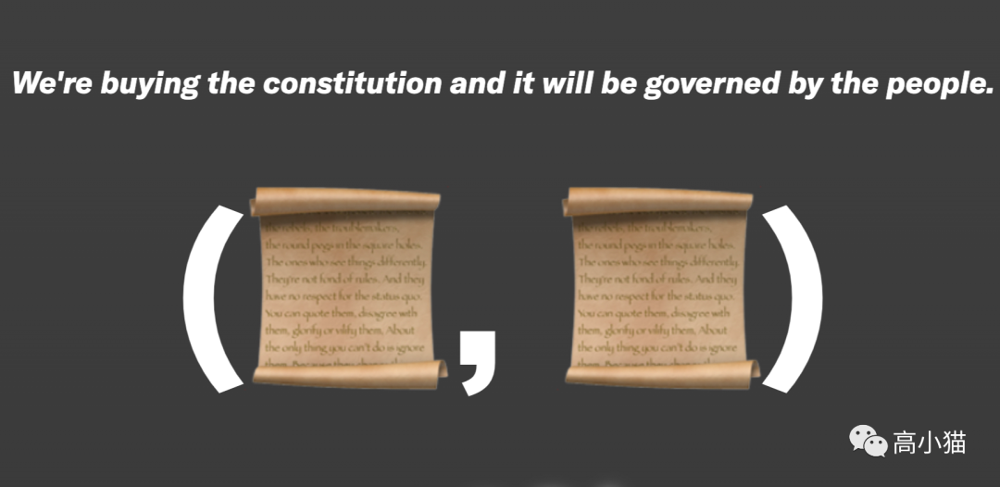
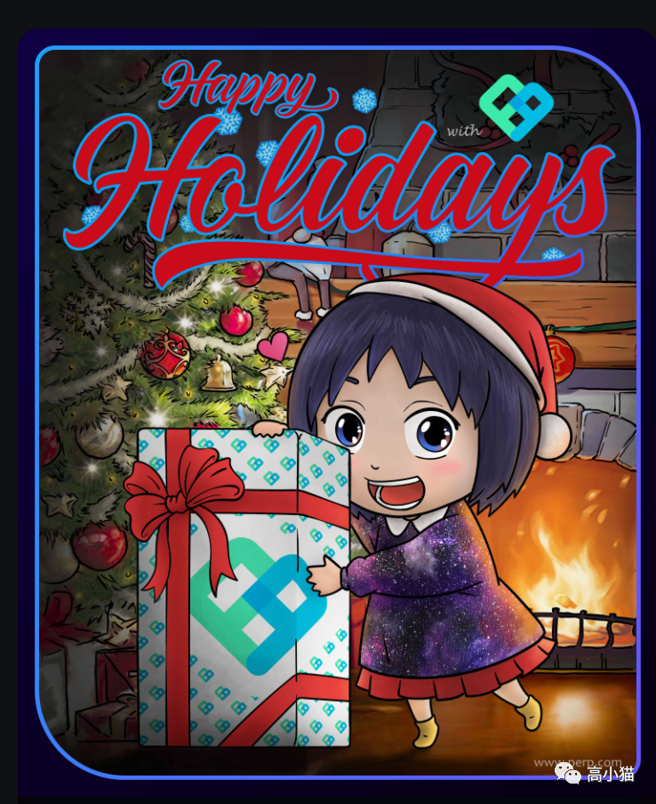
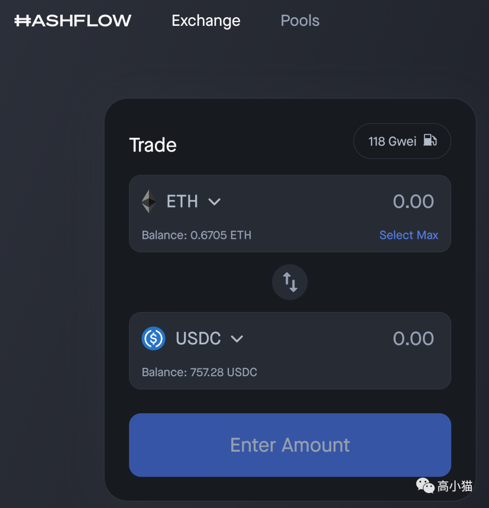
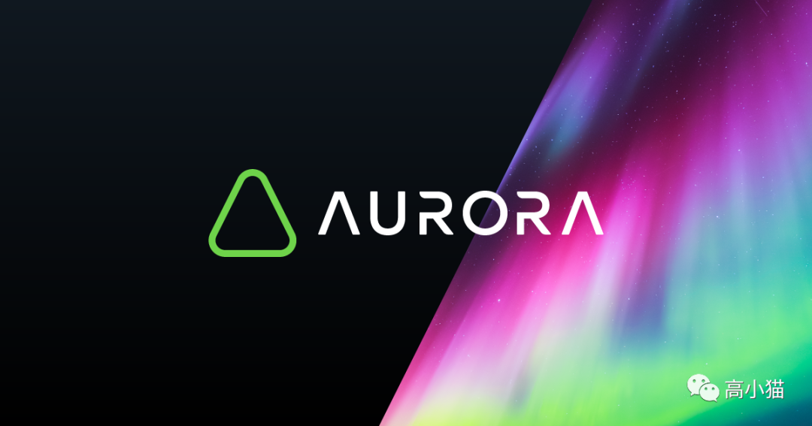
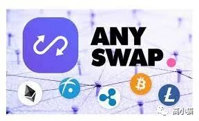
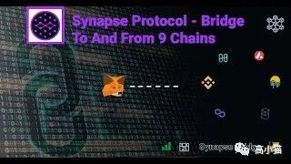
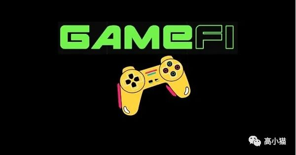

马上又要迎来新的一年，本想咬咬牙写个年终总结的。
但是过去的一年实在发生了太多事情，我又已经拖更太久，好多发生的事情都已经想不太起来了。
索性再写个随记，想到哪里写到哪里罢了。
一.
11月底到现在的市场，用无聊作为主题可能毫不为过。自从Gamefi在11月底泡泡破掉以后，整个市场就没有什么像样的热点了。
People和CityDao昙花一现了一波，之后又有gearbox和SOS。但是基本上并不影响无聊的大主题。

People的宣传图
无聊也有无聊的好处，就是可以静下心来做点一直想做的事情，比如研究一些新的侧链的文档呀，做做撸空投的任务呀，自己尝试搭搭节点之类的。
比如我今天就做了Galaxy的这个空投任务，顺便把这几个新的项目熟悉了一下。
https://blog.galaxy.eco/project-galaxy-2021-end-of-the-year-rave-is-here-9b28313fe4a5

Galaxy活动发的nft
其中可能最让我感觉有意思的是hashflow这个项目，居然可以做到gas fee比uniswap还低，滑点也很低这样子。
它的做法是把交易的对手方直接和各种做市商链接了起来，而不仅仅是dex上的流动性，从而降低了gas fee（因为这样它就可以直接用做市商的报价成交，免去了计算，降低了gas fee）
https://m.jinse.com/blockchain/1120291.html?source=m

二. Defi

伴随着avax, harmony, boba network, crypto, aurora等几个侧链的崛起，相关的defi生态里的赚钱机会一直都在不停地涌现，而且短期之内并没有停下来的迹象。
每一个新的公链都是我们羊毛套利党的机会。一方面是价差的机会，另一方面官方的刺激计划也会给大家带来丰厚的利润。具体的机会当然就要去具体的社群里，或者在链上自己寻找了。
提到这里我想重点说一下near。lao bai最近有一个帖子专门奶了一口near的技术，我觉得讲得还挺有道理的。
以near的技术我觉得应该是跟solana一个级别的，目前真正实现了分片的就没几个链。harmony目前的evm compatible似乎还只是在一个shard上跑。如果near/aurora可以第一个实现在多分片上的evm compatible，可能将会非常牛逼。
https://twitter.com/Wuhuoqiu/status/1474373972653318144
三. 跨链
聊到Defi以及各种侧链，不得不提的就是各种链接链之间的桥了。
因为资金调配的原因，我对于各种桥的使用也略微有一些使用经验。
最常用的桥可能是multichain(https://multichain.org/), 也就是改版前的anyswap(https://anyswap.exchange/)了。

基本上他们家往往是最先支持各种新链的平台，币种也比较多，而且手续费也是最低那一档的。
除此以外，synapse protocol（https://synapseprotocol.com/）对于稳定币的跨链支持也非常全，一般anyswap上没有的话我会来这边看看，尤其对于boba生态支持比较全。

R哥家的SWFT桥也做得非常不错，支持的币种比较多，手续费也很低：
https://defi.swft.pro/Allbridge最近用了一下，主要是支持Terra生态支持得不错，https://app.allbridge.io/。
Celler家出的bridge：https://cbridge.celer.network/
基本上我主要跨链会看的就是这些桥了。
一般这些桥会比官方的桥gas fee稍微低一点，因为实现原理上通常是用的liquidity based的方式。
如果实在没有一个桥支持某些需求的话，可能也会不得不用官方桥。
总体来说目前跨链桥的龙头应该算是anyswap，1.7b的估值，二线的一些跨链桥，像是synapse，allbridge基本上在500m左右的估值。
这一块儿长期来看肯定是一个重要的方向，因为所有的侧链，未来全靠着这些桥来实现互通。
四. Gamefi

我个人认为明年的Q1, 即2022年的1-3月份，gamefi还会有第二波浪潮（如果整个市场没有彻底进入熊市的话）。
如果说2020年9月的Defi summer是第一波，2021年1-4月份是Defi的第二波爆发的话。
那我们也许可以说2021年6-11月是Gamefi的第一波，也许2021年1-4月也许会有Gamefi的第二波爆发。
为什么有这样的判断呢？因为Gamefi的第一波破灭和2020年Defi Summer的破灭有两个相似点。
相似点一：破灭的原因类似
Gamefi和Defi的第一波都是重资金盘的玩法，利用高年化二池吸引资金进入，而缺乏对于进入资金的有效利用，导致盘子难以维持。前期大家不会玩的时候，二池可以维持高年化非常久，但是当大家对于套路熟练了以后，就变成一个跑得快的游戏。
Sushi从10刀跌到0.5刀，和Cryptomine从800跌到2何其地类似？只不过Sushi后来真正有了价值支撑，才慢慢回归，而游戏领域不太一样，所以这个盘子可能再也起不来了。
而到了Defi第二波的时候，就不再有那种非常简单的Defi模式了。项目方确实会分利益给来挖矿的人，但是他们也是能够有效地利用挖矿的人的资金的。尤其是Defi 2.0以后，ohm, tokemak等盘子更是如此。
相似点二：第一波的破灭奠定了一个良好的后续发展环境
在Defi和Gamefi中，第一波的热潮都为第二波铺垫了一个非常有利的环境。
Defi Summer以后的热潮吸引了大量的优秀的团队进入这个行业来建设（捞钱）。大量的开发者涌入社区，各种垃圾仿盘层出不穷，同时各种有意思的创新也层出不穷。
过去Gamefi火热的几个月，也是类似的情况，各种垃圾仿盘层出不穷，其中可以看到大量的尝试和变化。而且Gamefi的玩法会比Defi的玩法更多，更复杂。
而且Gamefi过去火热的几个月中，一级市场上在gamefi的布局也是非常迅猛，大量的游戏产业的正规军也在跑步进场。
大量人才+充足资金+几个月的时间，带来的必将是整个生态的大爆发。
五.
好久没写文章了，文笔有些生疏了。今天就写到这儿吧。也祝各位读者新年快乐~~
也欢迎关注我的公众号。